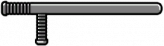

Armas de Ombro
Escopetas
Fuzis de Assalto
Fuzis de precisão
Metralhadoras leves

Armas brancas
Armas de Ombro
Escopetas
Fuzis de Assalto
Fuzis de precisão
Metralhadoras leves
Armas brancas
Uma arma de fogo é um tipo de arma capaz de disparar um ou mais projéteis em alta velocidade através de uma ação pneumática provocada pela expansão de gases resultantes da queima de um propelente de alta velocidade. Este processo de queima subsônica é tecnicamente conhecido como deflagração, em oposição a combustão supersônica conhecida como detonação. Em armas de fogo mais antigas, o propulsor era tipicamente a pólvora negra ou a cordite, mas armas de fogo modernas usam a pólvora sem fumaça de base simples ou dupla ou outros propelentes. A maioria das armas de fogo mais modernas (com a exceção das armas de alma lisa) tem canos raiados (ranhuras internas espiraladas) para dar giro em movimento helicoidal ao projétil visando dar melhor estabilidade ao voo do mesmo e consequentemente mais precisão a distâncias maiores. A munição, outro elemento distinto da arma, é imprescindível para o funcionamento da arma de fogo moderna.
Um lança-foguetes é um dispositivo que lança um projétil não guiado e movido a foguetes, embora o termo seja frequentemente usado em referência a mecanismos portáteis e capazes de serem operados por um indivíduo. A categoria lança-foguetes inclui armas de ombro, qualquer arma que atire um projétil de míssil contra um alvo e ainda seja pequena o suficiente para ser carregada por uma única pessoa e disparada enquanto segurada no ombro.
Caçadeira (designação usada unicamente no português europeu) ou Espingarda, é uma espingarda normalmente utilizada para caça. No Brasil as espingardas de repetição(ação por bomba ou alavanca), semiautomáticas, cano duplo ou cano monotiro pelos cidadãos normalmente são usadas para defesa residencial, prática de tiro esportivo ou caça e também são usadas por forças de segurança e militares, em algumas regiões são chamadas vulgarmente de "escopeta", "trabuco" ou pelo nome do calibre, por exemplo "a 12"
Um fuzil de assalto (português brasileiro) ou espingarda de assalto (português europeu) é qualquer rifle de fogo seletivo que utilize cartuchos de calibre intermediário e um carregador destacável. O primeiro uso destas armas se deu na Segunda Guerra Mundial. Lentamente, ao longo do século XX, tornou-se a arma de escolha para a maioria dos exércitos ao redor do mundo, substituindo as submetralhadoras e outras armas.[4] Exemplos de armas classificadas como fuzis de assalto incluem a StG 44, a AK-47 e a M16.
Fuzil de precisão (português brasileiro) ou espingarda de precisão (português europeu) (Precision Rifle ou Sniper Rifle, em inglês) é uma arma longa (fuzil ou carabina) de combate normal que é retrabalhado em sua estrutura para poder dar tiros de maior alcance e precisão. Atualmente há armas projetadas e produzidas especificamente para executar essa espécie de tiro de precisão. Atualmente, as armas de precisão variam. Existem carabinas de caça de precisão, cujo único propósito é caçar pequenos animais. Há armas, porém, que têm funções bastante futuristas, como o OICW
Uma metralhadora leve (português brasileiro) ou metralhadora ligeira (português europeu) (em inglês light machine gun, ou LMG) é uma metralhadora de peso leve projetada para ser operada individualmente, com ou sem assistente. É usada como uma arma de apoio de infantaria. Em Portugal, é também utilizada a sigla ML para se referir às metralhadoras ligeiras.
Arma branca ("white weapon" ou "cold weapon" em inglês),[1] designa um objeto que possa ser utilizado agressivamente, para defesa ou ataque, mas cuja utilização normal é outra, geralmente para trabalho. Machados, facas e martelos são armas brancas; já outras armas como pistolas e rifles, por exemplo, não se incluem nessa categoria, pois são armas de fogo e a sua finalidade primária é ferir um oponente. Entre elas temos as cortantes, perfurantes, contundentes, perfurocortantes, cortocontundentes, perfurocontundentes e perfurocortocontundentes